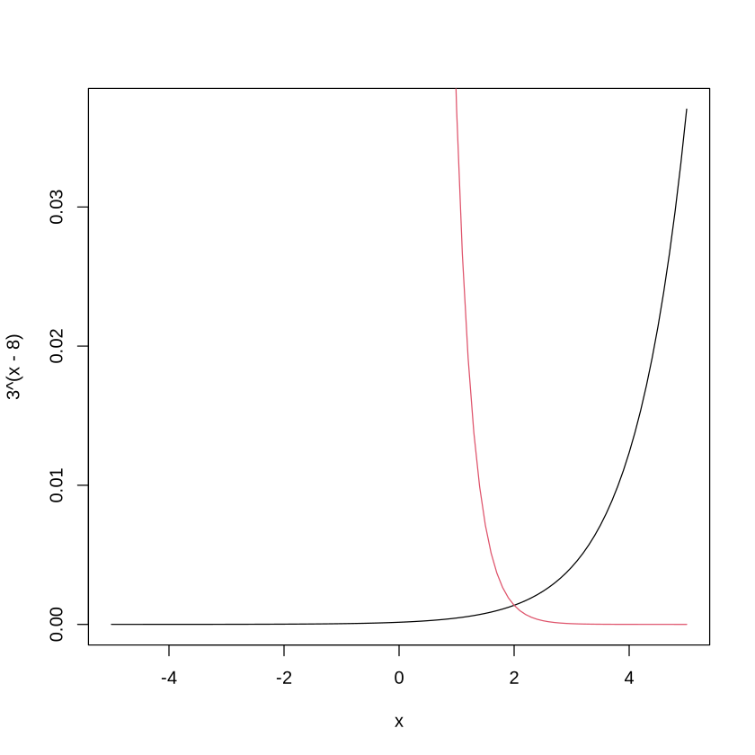

f = function(a){
(2^a + 2^(-a))/(2^a - 2^(-a))
} 02wk-2: xxx
1. 문제풀이
2010(나)6월평가원-4. 실수 \(a\) 가
\[
\frac{2^a + 2^{-a}}{2^a - 2^{-a}} = -2
\] 를 만족시킬 때, \(4^a + 4^{-a}\) 의 값은?
- $ $
- $ $
- $ $
- $ $
- $ $
(풀이)
a = -50:50/10
plot(a,f(a))
abline(h=-2,col=2)
a = seq(from=-2,to=-0.1,by=0.0001)
plot(a,f(a),type='l')
abline(h=-2,col=2)
a[abs(f(a)+2) == min(abs(f(a)+2))]
-0.7925
f(-0.7925)
-1.99996101223429
4^(-0.7925)+4^(0.7925)
3.33340264784444
c(5/2, 10/3, 17/4, 26/5, 37/6)- 2.5
- 3.33333333333333
- 4.25
- 5.2
- 6.16666666666667
2024수능-16. 방정식 \(3^{x-8} = \left(\frac{1}{27}\right)^x\) 을 만족시키는 실수 \(x\)의 값을 구하시오. [3점]
(풀이)
x = seq(from = -5, to = 5, by=0.1)
plot(x,3^(x-8),type='l')
lines(x,(1/27)^x,col=2)
x[(abs(3^(x-8) - (1/27)^x)) == min(abs(3^(x-8) - (1/27)^x))]
2
2021(가)9월평가원-10. 수열 \(\{a_n\}\)은 \(a_1 = 12\)이고, 모든 자연수 \(n\)에 대하여
\[
a_{n+1} + a_n = (-1)^{n+1} \times n
\] 을 만족시킨다. \(a_k > a_1\)인 자연수 \(k\)의 최소값은?
- 2
- 4
- 6
- 8
- 10
(풀이1)
a = 12
for(n in 1:10){
a = (-1)^(n+1) * n - a
print(a)
}[1] -11
,[1] 9
,[1] -6
,[1] 2
,[1] 3
,[1] -9
,[1] 16
,[1] -24
,[1] 33
,[1] -43(풀이2)
a = c()
a[1]=12
for(n in 1:10){
a[n+1] = (-1)^(n+1) * n - a[n]
}
a- 12
- -11
- 9
- -6
- 2
- 3
- -9
- 16
- -24
- 33
- -43
(1:10)[a>12]- 8
- 10